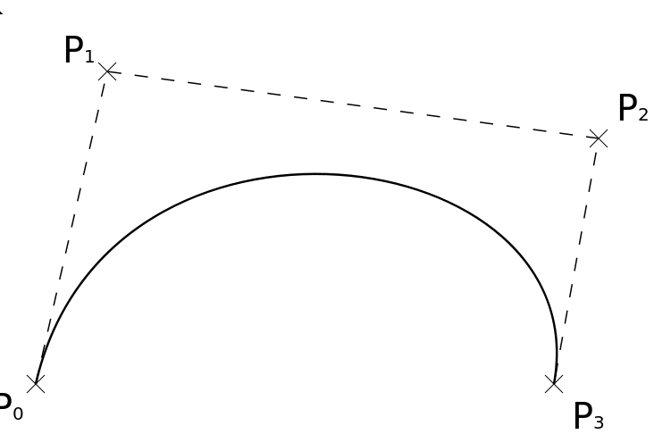
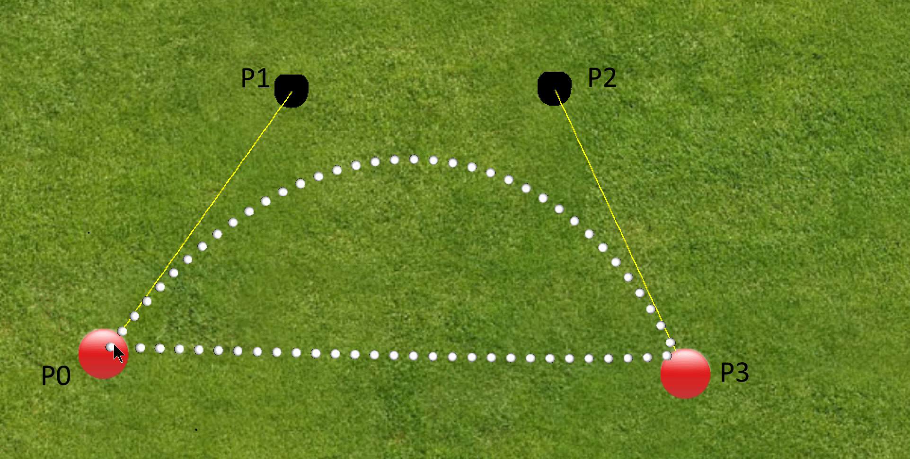
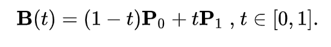
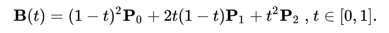
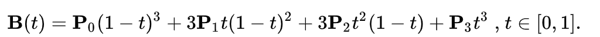

Una curva di Bézier è una particolare curva parametrica a due dimensioni, che ha grande applicazione nella computer grafica. Un metodo numericamente stabile per calcolare le curve di Bézier è l'algoritmo di de Casteljau.
Una generalizzazione delle curve di Bézier in tre dimensioni è chiamata superficie di Bézier di cui il triangolo di Bézier è uno specifico caso.
Le curve di Bézier furono largamente pubblicizzate nel 1962 dall'ingegnere francese Pierre Bézier che le usò per disegnare le carrozzerie delle automobili. Le curve furono realizzate nel 1959 da Paul de Casteljau usando l'algoritmo di de Casteljau.
Bézier stabilì un modo di realizzare le curve a partire da due punti e una poligonale, un sistema innovativo che permette ancora oggi agli operatori grafici di realizzare disegni curvilinei precisi. Le curve di Bézier possono essere realizzate da molti programmi di grafica vettoriale come Inkscape, GIMP, Corel Draw, Adobe Illustrator, Adobe Photoshop, Adobe After Effects o FreeHand, o di cartografia piana come OCAD.
I punti Pi sono chiamati punti di controllo per la curva di Bézier. Questo poligono è chiamato poligono di Bézier, ed esso controlla la curva di Bézier.
Di seguito vediamo un esempio di poligono di controllo:

La riproduzione nell'applicativo sarà il seguente:

Possiamo avere svariati casi per costruire una curva di Bezier, qui elenchiamo i 3 casi più comuni:
Lineari
In questo caso abbiamo solamente due punti che vanno a costituire la curva, con la formula

Quadratiche
Stavolta abbiamo 3 punti a costituire la nostra curva, con la seguente formula:

Cubiche
I quattro punti P0, P1, P2 e P3 nel piano o in uno spazio tridimensionale definiscono una curva di Bézier cubica. La curva ha inizio in P0 si dirige verso P1 e finisce in P3 arrivando dalla direzione di P2. In generale, essa non passa dai punti P1 o P2; questi punti sono necessari solo per dare alla curva informazioni direzionali. La distanza tra P0 e P1 determina quanto la curva si muove nella direzione di P2 prima di dirigersi verso P3.

Questi 3 casi sono i più utilizzati in ambito informatico, in quanto permettono una buona approssimazione e un buon risultato.